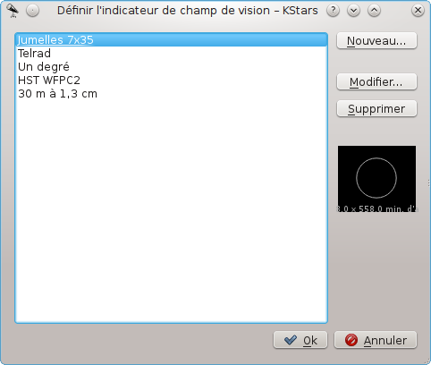
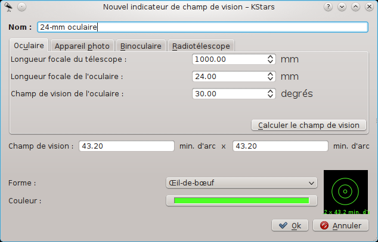

Il y a plusieurs manières de modifier l'affichage à votre convenance.
Vous pouvez inverser l'affichage des boîtes d'informations dans le menu → . De plus, vous pouvez manipuler les trois boîtes d'informations avec la souris. Chaque boîte possède des lignes additionnelles de données qui sont cachées par défaut. Vous pouvez basculer en mode d'affichage complet en double-cliquant sur la boîte pour l'“enrouler”. De plus, vous pouvez repositionner une boîte en la tirant avec la souris. Quand une boîte heurte un bord de fenêtre, elle s'y “colle” lorsque la fenêtre est redimensionnée.
Inverser la présence des barres d'outils dans le menu → . Comme la plupart des barres d'outils de KDE, elles peuvent aussi être déplacées et ancrées à n'importe quel côté de la fenêtre, ou même complètement détachées de la fenêtre.
Choisissez un modèle de couleurs différent dans le menu → . Il y a quatre modèles de couleurs prédéfinis, et vous pouvez définir le vôtre dans la fenêtre Configurer KStars.
Choisissez un “Indicateur de champ de vision (FOV)” en utilisant le menu → . FOV est un acronyme pour “field-of-view” (champ de vision). Un indicateur de champ de vision est dessiné au centre de la fenêtre pour indiquer où l'affichage pointe. Les indicateurs correspondant à différentes tailles angulaires ; vous pouvez utiliser un indicateur pour voir à quoi la vue ressemblerait à travers un certain télescope. Par exemple, si vous choisissez l'indicateur “Jumelles 7x35”, un cercle de 9,2 degrés de diamètre sera dessiné sur l'écran ; c'est le champ de vision d'une paire de jumelles 7x35.
Vous pouvez définir vos propres indicateurs de champ de vision (ou modifier les indicateurs existants) en utilisant l'élément de menu , ce qui lance l'éditeur de champ de vision :
La liste des indicateurs de champ de vision prédéfinis est affichée à gauche. Sur la droite se trouvent des boutons pour ajouter un nouvel indicateur, modifier les propriétés de l'indicateur surligné et supprimer l'indicateur surligné de la liste. Notez que vous pouvez même modifier ou supprimer les quatre indicateurs prédéfinis (si vous supprimez tous les indicateurs, les quatre indicateurs par défaut seront restaurés au prochain démarrage de KStars). Sous ces trois boutons se trouve un aperçu graphique montrant les indicateurs surlignés de la liste. Quand le bouton ou est actionné, la fenêtre Nouvel indicateur de champ de vision s'ouvre :
Cette fenêtre vous permet de modifier les quatre propriétés qui définissent un indicateur de champ de vision : le nom, la taille, la forme et la couleur. La taille angulaire pour l'indicateur peut être soit donnée directement dans la zone de saisie Champ de vision, soit utiliser l'onglet Appareil photo pour calculer l'angle de champ de vision, étant donné les paramètres de votre réglage de télescope / Viseur ou télescope / appareil photo. Les cinq formes disponibles sont : cercle, carré, croix, œil de bœuf et semitransparent. Une fois que vous avez spécifié les quatre paramètres, actionnez , et l'indicateur apparaîtra dans la liste des indicateurs définis. Il sera aussi disponible dans le menu → .